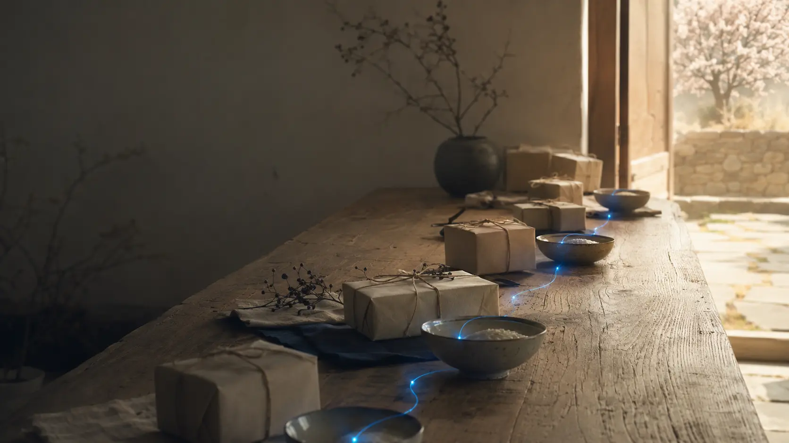
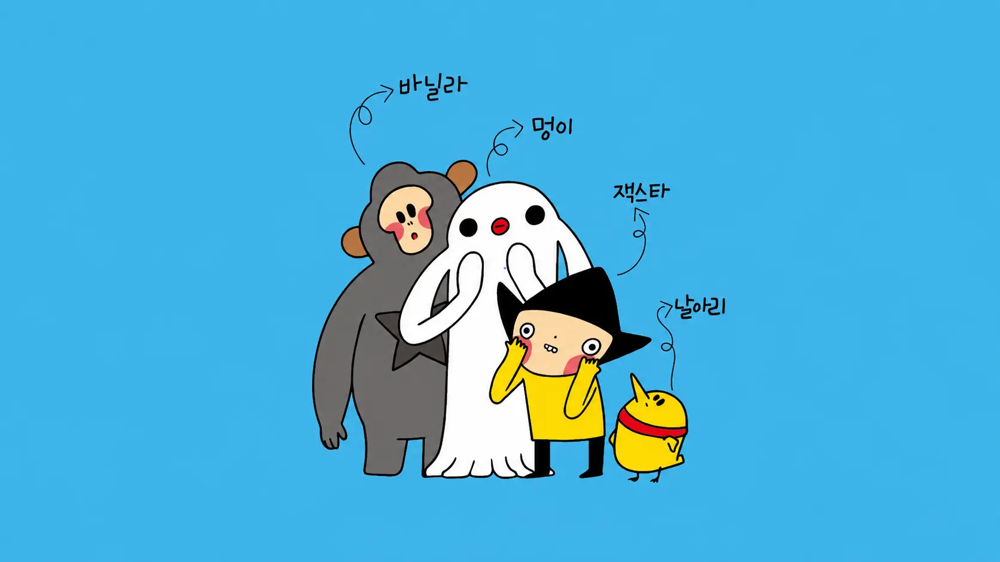

한 사람의 선의가다음 사람의 일상을 먼저 지불한다.One person's goodwillpays ahead for another person's day.
미리내운동은 김준호가 2013년 창시한 선결제 나눔 운동입니다. 누군가 음식이나 서비스를 미리 내어두면, 필요한 사람이 미리내가게에서 사용할 수 있습니다.Founded by Joonho Kim in 2013, the Mirinae Movement is a pay-it-forward movement: one person prepays for food or a service so another person can use it later at a participating Mirinae store.

미리 낸 마음이 다음 사람에게 닿는다.A gift paid forward reaches the next person.
미리내운동이 만든 것은 쿠폰이나 결제 방식만이 아닙니다. 선의를 부담 없이 주고받을 수 있도록 관계를 설계한 사회적 인터페이스입니다.The movement created more than a coupon or payment method. It designed a social interface through which goodwill could be offered and received without burden.
선의가 관계가 되는 세 단계Three steps turn goodwill into a relationship
설명이 아니라 누구나 이해하고 참여할 수 있는 작동 방식입니다.A legible mechanism lets anyone understand and participate.
- 01
미리 낸다A person prepays
누군가 다음 사람을 위해 음식이나 서비스의 값을 먼저 냅니다.Someone pays in advance for food or a service for the next person.
- 02
가게가 기록한다The store records it
참여 가게는 사용할 수 있는 나눔을 보이게 기록합니다.The participating store makes the available gift visible.
- 03
다음 사람이 사용한다The next person uses it
필요한 사람은 신분을 증명하는 대신 준비된 나눔을 사용합니다.A person in need uses the prepared gift without having to prove their identity.
시작과 확산을 기록한다.Remembering its origin and spread.
경남 산청 후후커피에서 첫 미리내가게가 시작됐습니다.The first Mirinae store began at HooHoo Coffee in Sancheong, South Gyeongsang Province.
약 150개 가게로 확산되며 카페를 넘어 식당과 다양한 생활 업종이 참여했습니다.The network reached about 150 stores and expanded beyond cafés into restaurants and everyday services.
회고 보도에서는 전국 400~500곳까지 참여한 것으로 소개됐습니다.A retrospective report described participation growing to roughly 400–500 locations nationwide.
기술은 나눔의 거리를줄일 수 있다.Technology can shortenthe distance to sharing.
기술과 창작은 선의를 대신하지 않습니다. 선의가 다음 사람에게 닿을 수 있는 거리를 줄입니다.Technology and creativity do not replace goodwill. They shorten the distance it must travel to reach the next person.